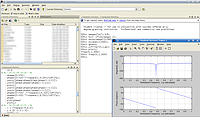
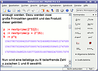

Matlab
Hinweis:
Diese Anleitung wurde anhand der "Student Version R2007a" erstellt, aber ist auch problemlos auf neuere Versionen übertragbar. Lediglich der Abschnitt zu den Problemlösungen wurde nicht komplett mit einer neueren Version getestet.
Die Version "R2011b" kann einfach durch Aufrufen des Installationsskriptes auf der DVD (inkl. sudo) installiert und durch Aufruf von MATLAB-INSTALLATIONSVERZEICHNIS/bin/matlab -desktop gestartet werden.
Dieser Artikel wurde für die folgenden Ubuntu-Versionen getestet:
Ubuntu 14.04 Trusty Tahr
Zum Verständnis dieses Artikels sind folgende Seiten hilfreich:
Matlab  ist eine kommerzielle, plattformunabhängige Software zur Lösung mathematischer Probleme sowie zur grafischen Darstellung von Ergebnissen. Matlab ist eine speziell entwickelte Sprache für technische Berechnungen und eine interaktive Umgebung für die Algorithmenentwicklung, die Visualisierung und Analyse von Daten sowie für numerische Berechnungen. Mit Matlab lassen sich technische Probleme schneller lösen als mit herkömmlichen Programmiersprachen wie C, C++ und Fortran. Im Gegensatz zu Computer-Algebra Systemen dient Matlab nicht der symbolischen, sondern primär der numerischen Lösung von Problemen. Die Software kommt in Industrie und an Hochschulen vor allem für numerische Simulationen zum Einsatz.
ist eine kommerzielle, plattformunabhängige Software zur Lösung mathematischer Probleme sowie zur grafischen Darstellung von Ergebnissen. Matlab ist eine speziell entwickelte Sprache für technische Berechnungen und eine interaktive Umgebung für die Algorithmenentwicklung, die Visualisierung und Analyse von Daten sowie für numerische Berechnungen. Mit Matlab lassen sich technische Probleme schneller lösen als mit herkömmlichen Programmiersprachen wie C, C++ und Fortran. Im Gegensatz zu Computer-Algebra Systemen dient Matlab nicht der symbolischen, sondern primär der numerischen Lösung von Problemen. Die Software kommt in Industrie und an Hochschulen vor allem für numerische Simulationen zum Einsatz.
 Matlab erlaubt es auch, in Matlab geschriebene Skripte in lauffähige C-Programme zu übersetzen, zum Beispiel um mathematische Module zu entwickeln, die dann einem größeren C-Projekt angewendet werden. Auch ist es möglich, aus Matlab heraus Funktionen und Bibliotheken, die in verschiedenen Sprachen geschrieben wurden, zu verwenden.
Die Student Version von Matlab ist eine leicht abgespeckte Version der Mathematiksoftware. Sie beinhaltet aber alle nötigen Elemente, um wissenschaftliche Aufgaben zu lösen. So befindet sich auf der DVD auch die Software Simulink, welche zur Modellierung von Systemen dient.
Es gibt einige freie Alternativen zu Matlab, die teilweise auch mit Matlab kompatibel sind:
Installation¶
Zuerst sollte überprüft werden, ob das DVD-Laufwerk auf "ausführbar" eingestellt ist. Hierzu die Datei /etc/fstab öffnen bzw. anzeigen und prüfen, ob eine Zeile ähnlich
/dev/scd0 /media/cdrom0 udf,iso9660 user,noauto,exec 0 0
ist. Wichtig ist der Parameter exec. Ist dies hinter dem CD/DVD-Laufwerkseintrag nicht vorhanden, dann muss man die Datei /etc/fstab mit einem Editor[2] mit Root-Rechten[5] öffnen und die Option entsprechend hinzufügen.
Ebenso sollte man sicher gehen, dass eine aktuelle Version von Java auf dem System installiert ist.
Nun kann die Matlab-DVD in das Laufwerk eingelegt werden. Mit dem Befehl
sudo sh /cdrom/install_unix.sh
kann das Setup gestartet werden. Der Befehl sudo[5] sollte vorangestellt werden, damit das Setup systemweite Links erstellen kann, die den späteren Gebrauch der Software vereinfachen. Nun kann man den Speicherort (z.B /opt/matlab7), sowie Komponenten festlegen, die installiert werden sollen. Beim erstmaligen Installieren muss beachtet werden, dass man sich auf der Seite von Mathworks registrieren muss. Dies geschieht mit einer gültigen E-Mail-Adresse und der Seriennummer, die sich auf der DVD-Hülle befindet.
Versucht man, eine Studentenversion von Matlab auf einem 64-bit-System zu installieren (R2007a), sollte man den Installer mit der Option -glnx86 starten, da es sonst zu einem Fehler kommt. Damit wird eine 32-bit-Version von Matlab installiert, da es keine 64-bit-Version für Studenten gibt. Beim Start sollte dieser Parameter ebenfalls angegeben werden:
sudo sh /cdrom/install_unix.sh -glnx86
Benutzung¶
Start¶
Ist die Installation abgeschlossen, so kann man Matlab mit dem Befehl
matlab
im grafischen Modus, oder mit
matlab -nodesktop
in einem Terminal starten.
Die grafische Oberfläche der 32-bit-Version lässt sich genau wie die Installation (s.u.) unter 64-bit-Systemen mit folgendem Befehl starten:
matlab -glnx86
Es ist sinnvoll, dafür ein alias anzulegen:
alias matlab="matlab -glnx86"
Verknüpfungen anlegen¶
Eine Verknüpfung für Matlab inklusive hochauflösenden Icon ist über die Installation des folgenden Paketes möglich:
matlab-support (multiverse)
 mit apturl
mit apturl
Paketliste zum Kopieren:
sudo apt-get install matlab-support
sudo aptitude install matlab-support
Während der Installation dieses Paketes muss man den entsprechenden Installationspfad von Matlab angeben.
Verknüpfungen manuell anlegen¶
Will man Verknüpfungen zu Matlab anlegen, so muss darauf geachtet werden, dass sie den Parameter -desktop enthalten, da sonst Matlab nur kurz seinen Splash-Screen zeigt aber nicht startet. Die Option -nosplash unterdrückt den Splash-Screen und beschleunigt dadurch den Programmstart.
Die Icons zu Matlab befinden sich im Matlab-Installationsverzeichnis unter X11/icons/. Diese sind jedoch nicht hochauflösend, man kann sich aber folgendes Icon herunterladen:
sudo wget http://upload.wikimedia.org/wikipedia/commons/2/21/Matlab_Logo.png -O /usr/share/icons/matlab.png
Die Verknüpfung kann z.B. mit
gksudo gedit /usr/share/applications/matlab.desktop
angelegt werden. Der folgende Text wird eingefügt. Die Zeile Name kann der jeweiligen Programmversion angepasst werden. Die letzte Zeile ist für gewöhnlich auskommentiert, sorgt so jedoch dafür, dass im Unity-Dash das Programm-Icon nicht mehrfach erscheint. Hinweis: Bisweilen kommt es vor, dass Matlab erst startet, wenn der Pfad direkt angegeben wird.
#!/usr/bin/sh [Desktop Entry] Type=Application Icon=/usr/share/icons/matlab.png Name=MATLAB R2012a Comment=Start MATLAB - The Language of Technical Computing #Uncomment the following line and comment the line after to #force matlab to use the 32 bits architecture #Exec=matlab -arch=glnx86 -desktop Exec=matlab -desktop #Sollte funktionieren. Wenn nicht: Auskommentieren, untere Zeile einkommentieren und den Pfad anpassen. #Exec=/usr/local/MATLAB/R2012a/bin/matlab -desktop Categories=Development; #Uncomment the following line if you've got several matlab icons in the launcher StartupWMClass=com-mathworks-util-PostVMInit
Um mit Matlab zu arbeiten, benötigt dieses ein "Arbeitsverzeichnis", aus dem die sogenannten "m-Files" eingelesen werden können. Dies ist standardmäßig auf /home/BENUTZER beschränkt. Möchte man ein weiteres Verzeichnis hinzufügen, so muss Matlab mit Root-Rechten gestartet werden, bevor über "File/Set Path" Verzeichnisse hinzugefügt oder verändert werden können.
Startup-Skript¶
Matlab hat ein globales Startup-Skript matlabrc.m, dieses führt, falls im "Arbeitsverzeichnis" vorhanden, die Datei startup.m aus. startup.m ist gedacht für Benutzereinstellungen, um beispielsweise Konstanten zu definieren, in ein bestimmtes Verzeichnis zu wechseln und so weiter. Sollte beim Start von Matlab automatisch in das Verzeichnis wechseln, in welchen man seine .m-Files" gespeichert hat, kann in der Datei /home/BENUTZER/startup.m (diese wird nicht automatisch bei der Installation angelegt), die Zeile
cd PFAD/ZU/DEN/M-FILES
ergänzt werden.
Toolboxen¶
Eine Stärke von Matlab sind seine Toolboxen, speziell für bestimmte Einsatzgebiete geschriebene Erweiterungen. So gibt es Toolboxen für die industrielle Bildverarbeitung, für Berechnungen im Flug- und Raumfahrtsbereich, für die Finanzmathematik und vieles mehr.
MuPAD¶
 Das ehemals eigenständige Computeralgebrasystem MuPAD wurde, nachdem The MathWorks (Hersteller von Matlab), SciFace (Hersteller von MuPAD) übernommen hat, als Toolbox in Matlab integriert. Da MuPAD ursprünglich ein eigenständiges Programm war, besitzt MuPAD auch heute noch eine von Matlab abweichende Syntax. Der Zuweisungsoperator in MuPAD ist beispielsweise :=, während er in Matlab = ist.
Gestartet wird MuPAD aus Matlab heraus entweder mit
mupad
oder über das Matlab Startmenu unter "Toolboxes/Symbolic Math".
Simulink¶
Eine weitere Stärke von Matlab ist Simulink, ein eigentlich eigenständiges Programm für Simulationen von Modellen jeglicher Art, das aber zum Betrieb Matlab braucht und somit in der Regel mitinstalliert ist. Simulink lässt sich über das Matlab-Startmenu starten.
Problemlösungen¶
Probleme bei der Installation/Benutzung¶
Sollten bei der Installation Probleme auftreten, die auf einen nicht kompatiblen X-Server hindeuten, so wurde das DVD-Laufwerk höchstwahrscheinlich nicht auf ausführbar gesetzt. Ein anderer Grund dafür kann das Benutzen der 64-bit-Version von Ubuntu sein, für welche die Student-Version von Matlab nicht ausgelegt ist.
Probleme während dem Gebrauch von Matlab, wie z.B Abstürze oder nicht funktionierende Starts, sowie Probleme mit der GUI von Matlab liegen meist an einer falschen Verknüpfung von Java in Matlab. Dieses Problem kann behoben werden, indem man der Datei ~/matlab7/bin/matlab folgende Zeile hinzufügt:
export MATLAB_JAVA=/usr/bin/java
MATLAB startet nicht¶
Nach der Installation kann es vorkommen, dass MATLAB nicht startet, sondern im Splash-Screen hängen bleibt. Grund ist der Ordner ./matlab im Homeverzeichnis, welcher bei der Installation mit root-Rechten angelegt wird und deshalb für den späteren Nutzer nicht zugänglich ist. Löschen des Ordners löst das Problem (siehe auch Thread im Forum).
Segmentation violoation beim starten in Ubuntu 16.04¶
Die C library, die Matlab nutzt ist veraltet und harmonisiert nicht mit dem System.
Navigiere dahin wo Matlab installiert ist. Standard ist /usr/local/MATLAB/R2016a/
Navigiere zu /sys/os/glnxa64
Benenne die Datei libstdc++.so.6 zu libstdc++.so.6.old um.
Probleme mit GUI/Compiz¶
Wenn Compiz aktiviert ist, wird das Matlab Fenster grau erscheinen, außer dem Start-Button unten links ist nichts zu sehen. Durch das Hinzufügen des korrekten Pfades zu Java im Matlab-Startskript sollte es funktionieren. Evtl. muss der Pfad angepasst werden, falls eine andere Java-Version installiert ist.
Das Startskript bin/matlab befindet sich im Matlab-Installationsverzeichnis und sollte dann auf den ersten paar Zeilen so aussehen:
#!/bin/sh export MATLAB_JAVA=/usr/lib/jvm/java-6-sun/jre/ # Name: # matlab script file for invoking MATLAB #
Hier und hier werden im Forum weitere Lösungen für GUI-Probleme beschrieben
Auch die unter Probleme bei der Installation genannte export-Zeile könnte das GUI/Java Problem lösen
Konfiguration kann nicht gespeichert werden¶
Wird im Command Window alle paar Sekunden die Nachricht The desktop configuration was not saved successfully angezeigt, passen die Rechte des versteckten Matlab-Verzeichnis nicht. Dazu folgenden Befehl in einem Terminal ausführen:
sudo chown -R USERNAME:USERNAME ~/.matlab
Dabei USERNAME durch den eigenen Benutzernamen ersetzen.
Probleme beim Drucken¶
Sollte beim Drucken in der Java-Oberfläche von Matlab 2008 nur eine Fehlermeldung der Form Exception in thread "AWT-EventQueue-0" java.lang.NullPointerException: null attribute auftreten, liegt dies leider an der Kombination von Java mit CUPS.
Ein Behelf funktioniert wie folgt: die Datei /etc/cups/printers.conf wird editiert und vor </printer> die Zeile
Option orientation-requested 3
eingefügt.
Probleme mit der Darstellung der Schriften¶
Wird in den Figures nur die Schriftart Courier dargestellt, oder können keine LaTex Symbole dargestellt werden, so müssen folgende Pakete nachinstalliert werden:
sudo apt-get install xfonts-75dpi xfonts-100dpi
Die neu installierten Schriften werden erst nach Abmeldung und erneuter Anmeldung aktiv.
Probleme mit älteren Versionen (Matlab 7 R14)¶
Simulink lässt Matlab abstürzen¶
Seit Gutsy fehlt leider die Bibliothek libXft1, da es keine Pakete gibt, die davon abhängen, Simulink benötigt diese Datei aber. Fehlt sie, stürzt Matlab mit dieser Fehlermeldung ab:
??? Can't load '/usr/local/matlab7/bin/glnx86/libmwsimulink.so': libXft.so.1: cannot open shared object file: No such file or directory
Man findet eine geeignete Version auf reacomp.com  , dazu die Datei libXft-nohint.tar.gz speichern und entpacken.
, dazu die Datei libXft-nohint.tar.gz speichern und entpacken.
Hinweis!
Fremdsoftware kann das System gefährden.
Bei Bedarf die sha1-Summe prüfen (mit Matlab 7 R14 funktioniert 1876ac141d1c3f8c146df5839a188dde3fac3fdf) und die Datei libXft.so.1.1 nach /usr/lib/ kopieren, die Besitzrechte anpassen und einen symbolischen Link darauf mit Namen libXft.so.1 erstellen.
tar -xvzf libXft-nohint.tar.gz cd libXft-nohint sudo cp libXft.so.1.1 /usr/lib/ cd /usr/lib sudo chown root:root libXft.so.1.1 sudo ln -s libXft.so.1.1 libXft.so.1
Probleme mit OpenGL¶
Sollte man von Matlab mit Meldungen wie
warning : could not query OpenGL warning : OpenGL appears to be installed incorrectly
oder
warning: Could not access OpenGL library
begrüßt werden, so helfen folgende Schritte:
Matlab-Verzeichnis herausfinden, (im weiteren
$MATLABDIR) vermutlich /usr/local/matlab7, evtl. hilftlocate install_matlabEinen Unterordner namens lib erstellen
Einen symbolischen Link auf /usr/lib/libGL.so und einen auf $MATLABDIR/sys/opengl/lib/glnx86/libGLU.so setzen, jeweils mit gleichem Namen.
Datei /usr/local/matlab anpassen, so dass Matlab die Bibliotheken findet
cd $MATLABDIR sudo mkdir lib cd lib sudo ln -s /usr/lib/libGL.so libGL.so sudo ln -s $MATLABDIR/sys/opengl/lib/glnx86/libGLU.so libGLU.so
Zum Abschluss die Datei /usr/local/bin/matlab mit einem Editor[2] mit Root-Rechten[5] öffnen und ca. bei Zeile 160 Folgendes suchen:
# Copyright 1984-2004 The MathWorks, Inc.
# $Revision: 1.100.4.17 $ $Date: 2004/04/19 01:08:17 $
#__________________________________________________________________________
#
arg0_=$0Zwei Zeilen einfügen, so dass wie folgt aussieht: ($MATLABDIR bitte wieder durch den richtigen Pfad ersetzen)
# Copyright 1984-2004 The MathWorks, Inc.
# $Revision: 1.100.4.17 $ $Date: 2004/04/19 01:08:17 $
#__________________________________________________________________________
#
# Tweak to help Matlab find the OpenGL libraries in $MATLABDIR/lib
export LD_LIBRARY_PATH="$MATLABDIR/lib:$LD_LIBRARY_PATH"
#__________________________________________________________________________
#
arg0_=$0Mehr Informationen findet man in der Matlab Central. 
Probleme mit Zirkumflex (^)¶
Es kann sein, das nach einer Matlab Installation der Zirkumflex(^) nicht funktioniert. Das Problem lässt sich lösen, indem bei den Tastatureinstellungen (bei KDE 4.5.3 unter "Systemverwaltung -> Eingabegeräte -> Tastatur) eine Belegung hinzufügt, und die Akzenttasten deaktiviert.
Standard-Tastenkürzel¶
Möglicherweise funktionieren einige Tastenkürzel (wie Strg + C etc.) nicht. Das lässt sich ändern, indem man die "key bindings" auf Windows umstellt. Diese sind zu finden unter "File -> Preferences -> Keyboard".
Ubuntu 13.10¶
Unter Ubuntu 13.10 fehlen standardmäßig einige 32-Bit Bibliotheken. Diese können mit
sudo apt-get install libxtst6:i386 libXext6:i386 libxi6:i386 libncurses5:i386 libxt6:i386 libxpm4:i386 libxmu6:i386 libxp6:i386
nachinstalliert werden.
Matlab über ssh und screen¶
Zwei Probleme treten auf: Matlab erwartet standardmäßig von stdin lesen zu können. Deshalb kann man ein Matlab-Skript nicht einfach im Hintergrund starten. Stattdessen muss stdin umgeleitet werden: Matlab im Hintergrund. Zusätzlich startet Matlab standardmäßig einen Desktop und gibt X11-Befehle aus. Deshalb kann man sich - trotz screen - nicht von der ssh-Verbindung trennen ohne Matlab abzuschießen. Der lokale Rechner müsste also, trotz Verwendung von Screen während des Ausführens eines Matlab-Skripts zusätzlich die ganze Zeit laufen. Würde die ssh-Verbindung gekappt, würde auch Matlab abgeschossen.
Um das zu umgehen und die ssh-Verbindung trennen zu können, hat sich folgende Vorgehensweise bewährt:
Zunächst per ssh auf den Ziel-Rechner verbinden. Dort eine Screen-Session starten
screen -S MatlabSession
Den Matlab-Befehl
matlab -nojvm -nosplash -nodesktop -nodisplay -r "BEFEHL;exit;" >logdatei.txt </dev/null
oder das Matlab-Skript (hier MATLABSCRIPT.m im aktuellen Verzeichnis) starten
matlab -nojvm -nosplash -nodesktop -nodisplay -r "MATLABSCRIPT;exit;" >logdatei.txt </dev/null
Beim Start eines Skripts ist wichtig, die Dateiendung .m im Aufruf wegzulassen. Die Log-Datei logdatei.txt ist optional, man kann auch ins Datengrab /dev/null umleiten. Alternativ kann man das Skript auch direkt auf stdin umleiten
matlab -nojvm -nosplash -nodesktop -nodisplay >logdatei.txt <MATLABSCRIPT.m
Wichtig ist dann, dass in MATLABSCRIPT.m am Ende exit; steht.
Die Optionen -nodesktop und -nodisplay sind entscheidend: -nodesktop startet Matlab von der Konsole, -nodisplay unterbindet die Ausgabe von X11-Befehle. Ohne die letzte Option kann man sich zwar von der Screen-Session detachen (
Strg +
A +
D ), allerdings kann man dann nicht die ssh-Verbindung trennen, ohne Matlab abzuschießen. Mit den beiden Optionen kann man die Screen-Session nun detachen, die ssh-Verbindung trennen und den lokalen Rechner herunterfahren. Die Option -nojvm ist optional. Werden im Skript Abbildungen erstellt, muss diese Option weggelassen werden.
Ist das Skript oder der Befehl durchgelaufen, kann man sich per ssh wieder auf den Zielrechner verbinden und die Matlab-Session wieder aufnehmen
screen -r MatlabSession
Ständig hohe CPU-Auslastung¶
Unter Ubuntu kann es dazu kommen, dass Matlab ständig den CPU belegt, obwohl keine Matlab-Programme ausgeführt werden. Das kann am internen Browser für die Hilfeseiten liegen, für den standardmäßig der JxBrowser aktiviert ist. Auf eine weniger CPU-lastige HTML-Darstellung wechselt man durch die Eingabe in das Matlab-Command-Fenster: Quelle
com.mathworks.mlwidgets.html.HtmlComponentFactory.setDefaultType('HTMLRENDERER'); Compiler und MEX Functions¶
Matlab unterstützt oft nur Compilerversionen, die älter sind als die von Ubuntu ausgelieferten. Damit Matlab reibungslos kompiliert werden kann, muss der passende Compiler nachinstalliert werden und Matlab kenntlich gemacht werden. Die folgenden Befehle wurden getestet auf Ubuntu 15.10 mit Matlab 2015b. In diesem Fall wird die Version 4.7 benötigt. Je nach Matlab-Version ist die Compilerversion anzupassen.
sudo apt-get install gcc-4.7-multilib libstdc++6-4.7-dev
mkdir ~/.matlab/bin
ln -s /usr/bin/gcc-4.7 ~/.matlab/bin/gcc
printf "setenv('PATH',sprintf('/home/%%s/.matlab/bin:%%s',getenv('USER'),getenv('PATH')));\n" >> ~/Documents/MATLAB/startup.m - Erstellt mit Inyoka
-
 2004 – 2017 ubuntuusers.de • Einige Rechte vorbehalten
2004 – 2017 ubuntuusers.de • Einige Rechte vorbehalten
Lizenz • Kontakt • Datenschutz • Impressum • Serverstatus -
Serverhousing gespendet von